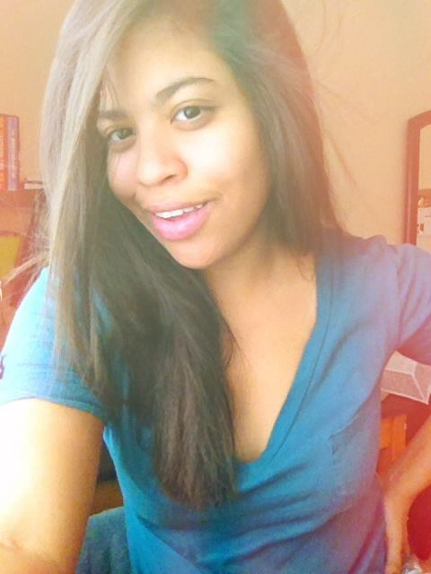

Nací en un día cálido y soleado el 03 de Diciembre, 1992 en Santo Domingo, República Dominicana. Mi nombre es Aimée Morales y tengo la boca de mi madre y los ojos de mi padre, y en mi rostro, aun siguen juntos. En la actualidad estudió Diseño de Comunicaciones en la Escuela de Diseño de Altos de Chavón.
A los 17 años empecé mis estudios en la Universidad Central del Este en la carrera de Medicina. Después de 3 años, deje la carrera para seguir mi sueño de estudiar arte.
La vida para mí significa amigos y familiares con los cuales puedo confiar y que confíen en mí. Estoy en el lado feliz de la vida , pero al igual que todos los adolescentes tengo mis "días de". Eso significa que tengo algunos días tristes o deprimentes, pero mi familia está siempre a mi lado para apoyarme y guiarme en la vida.
